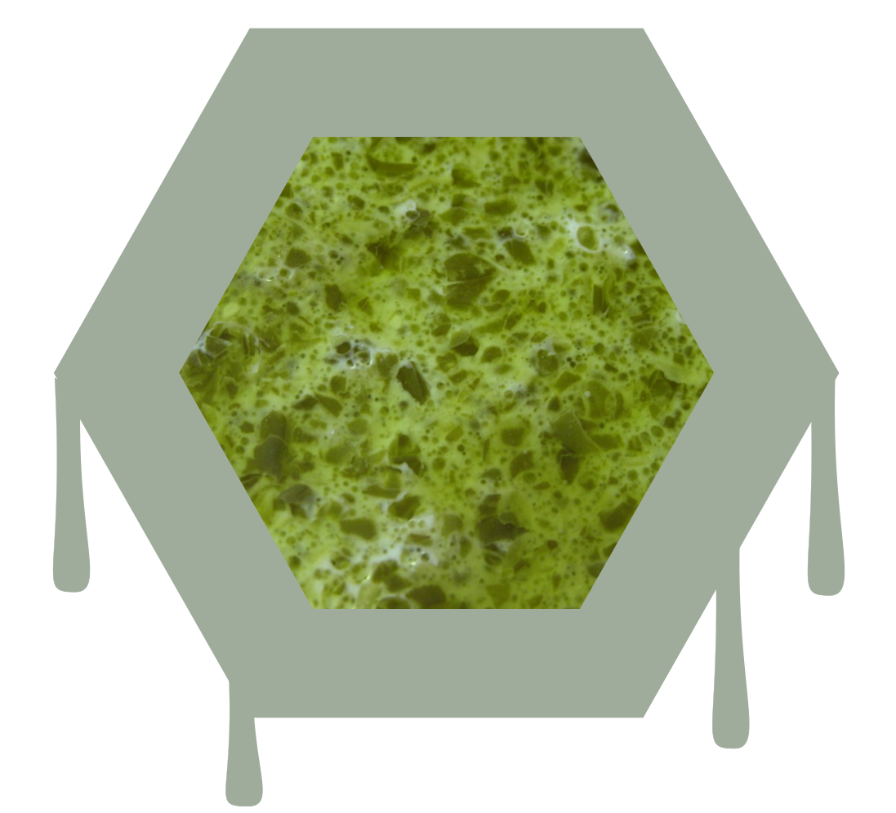
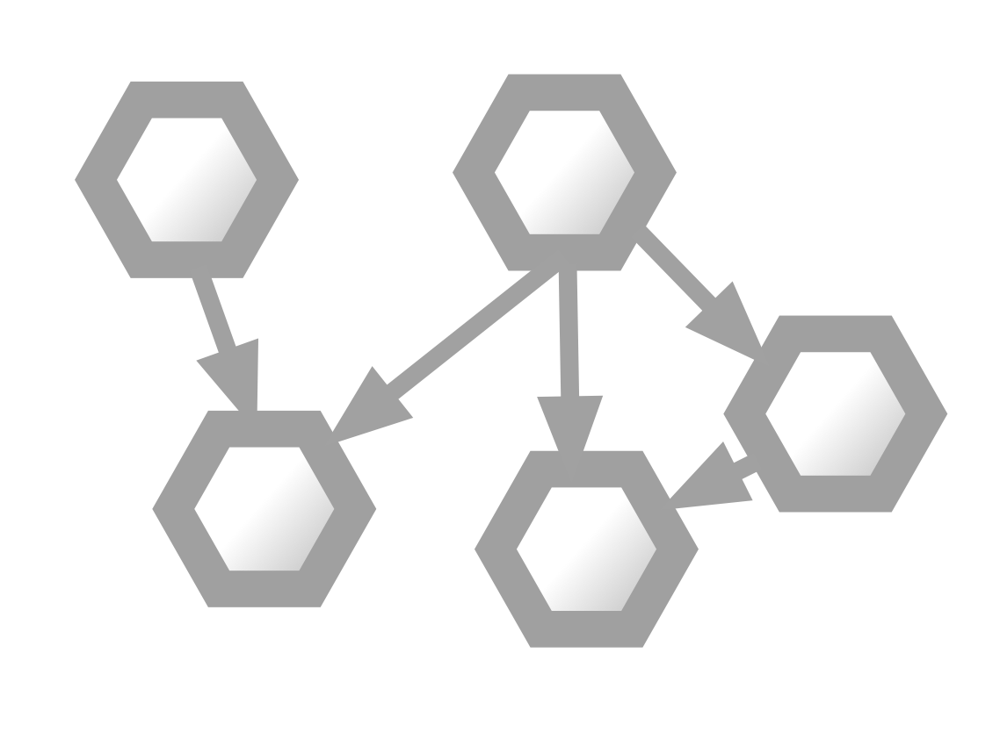
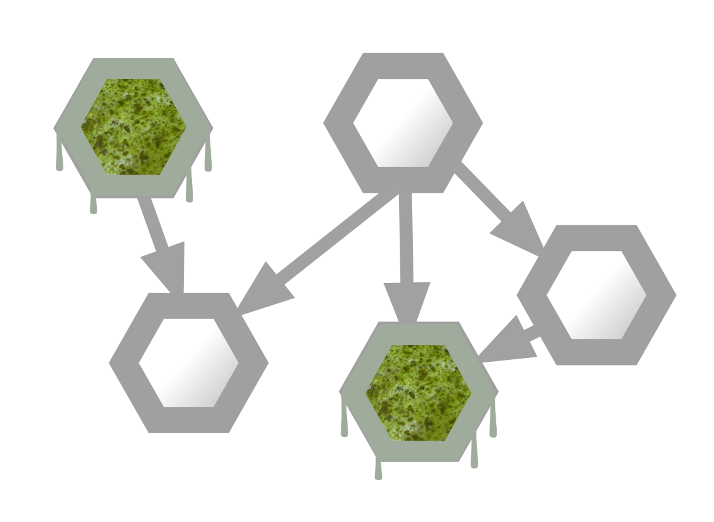

Security and Microservices
Owen Cliffe, 2016
Authentication & Access Control
Software Correctness



In summary
- (Much) more complex than monolithic
- Few tools to help you out
- Consistency and good patterns important
- Can get easier if you do it right
- Can lead to more secure systems